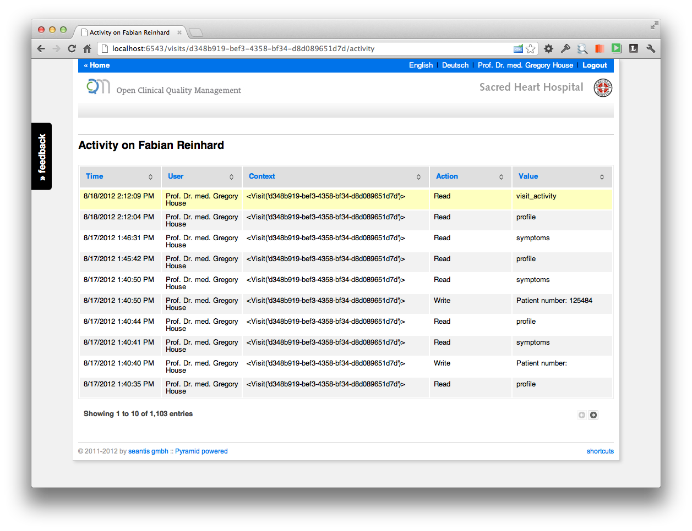
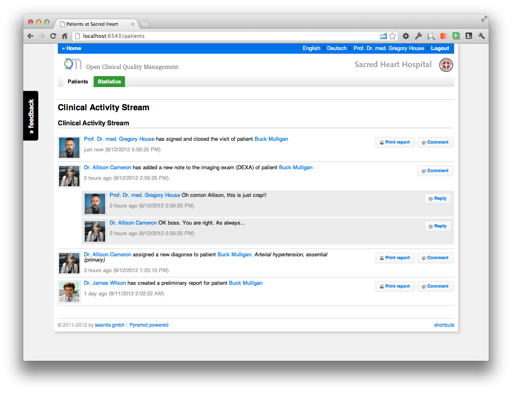

18.08.2012
OCQMS: Clinical Activity Stream
Concept to turn a technical (=boring) changelog into a social (=exciting) activity stream.
OCQMS includes a full changelog to record all changes made to patient and clinical data. In a medical IT systems it's a key requirement to track who did what and when. It used to be seen as an unpleasant duty and therefore boring stuff required for legal compliance only. Additionally, with current implementations it's not very likely that anyone will use the data recorded in the changelog at any time.
Tracking all the read and write activities on all records of the system will leave you with thousands of log entries in no time. For OCQMS we built a simple activity table to present the information to authorized users.
I must confess that the table looks a bit too technical and you could make it a bit more accessible for humans. But the information is there and it certainly makes sense not only to track the information in some dark technical orbit far away but to actually show it to the user. Everyone can see in real time that all actions (e.g., opening and reading a patients report) are tracked!

But hey: why not making the data more accessible by giving it some "social flavor". The same boring table suddenly looks like this.

You may say that a system for medical data is no Facebook. Right! But since humans are collecting the clinical data it is a "social undertaking". And treating patients requires teamwork and is therefore genuinely social. Physicians talk to their colleagues about patients and their treatment on the hospital floors.
Some concepts from social networks such as Facebook could indeed be helpful:
- profile image: the importance of the profile image seems immature at first sign. But it can make sense because it makes reading data and assigning an author much faster and less prone to error.
- "just now": informations about events in written textual form are better suited for embedding into a chronological context (when did it happen).
- comments: commenting about activities helps to keep track of the loosely structured data resulting from personal communication. Head physicians advise their team members and everyone can see the comments and reply instantly.
So far the clinical activity stream is a concept with some mock-ups only but the implementation shouldn't be that hard.